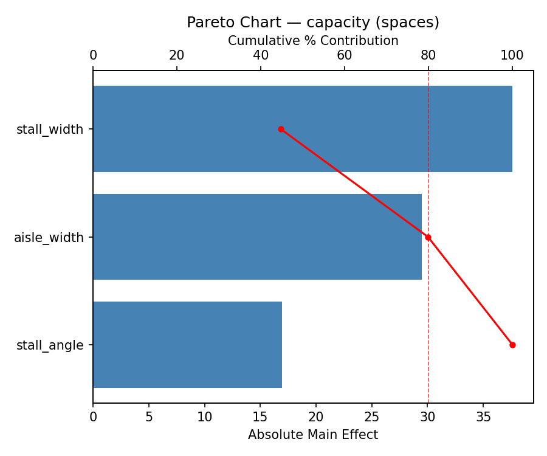
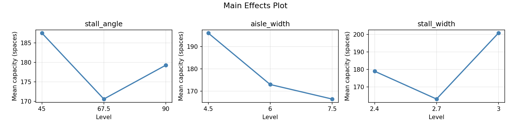
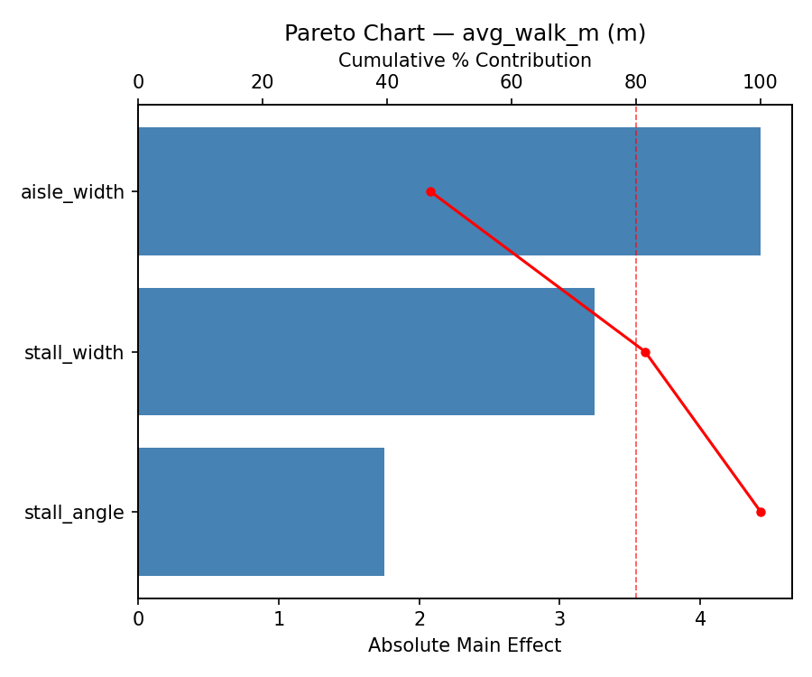
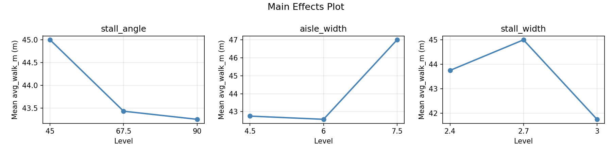
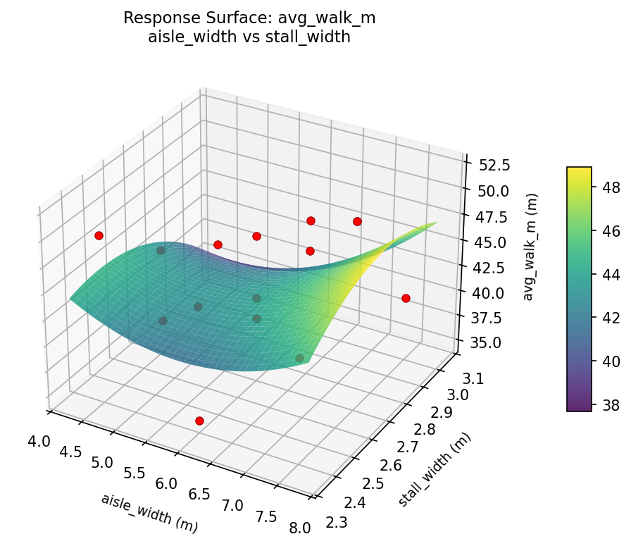
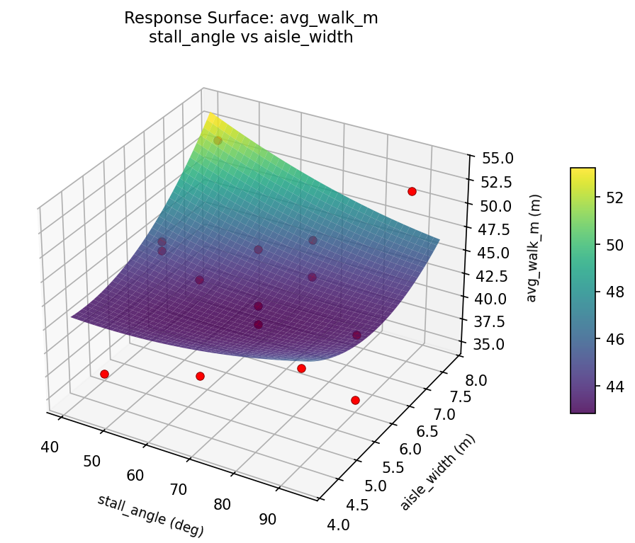
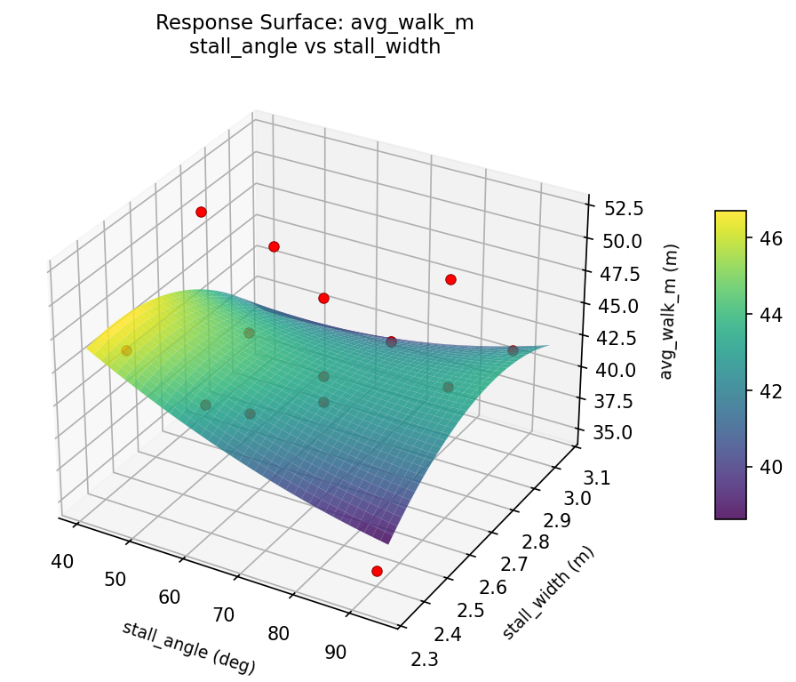
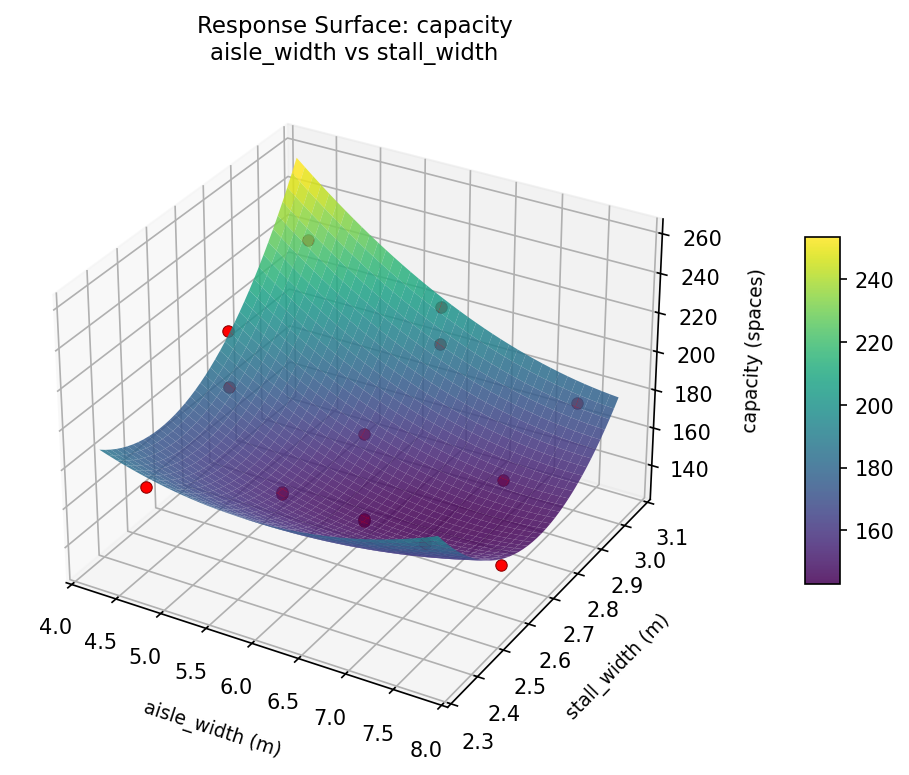
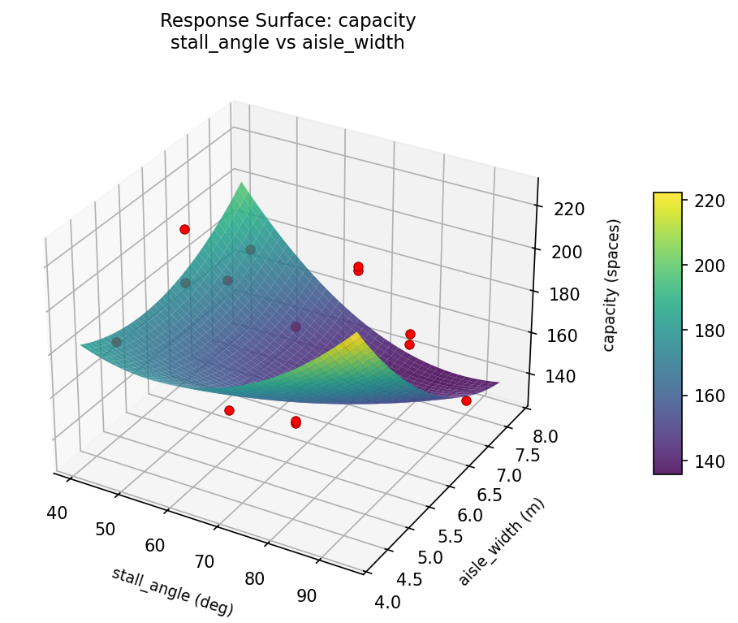
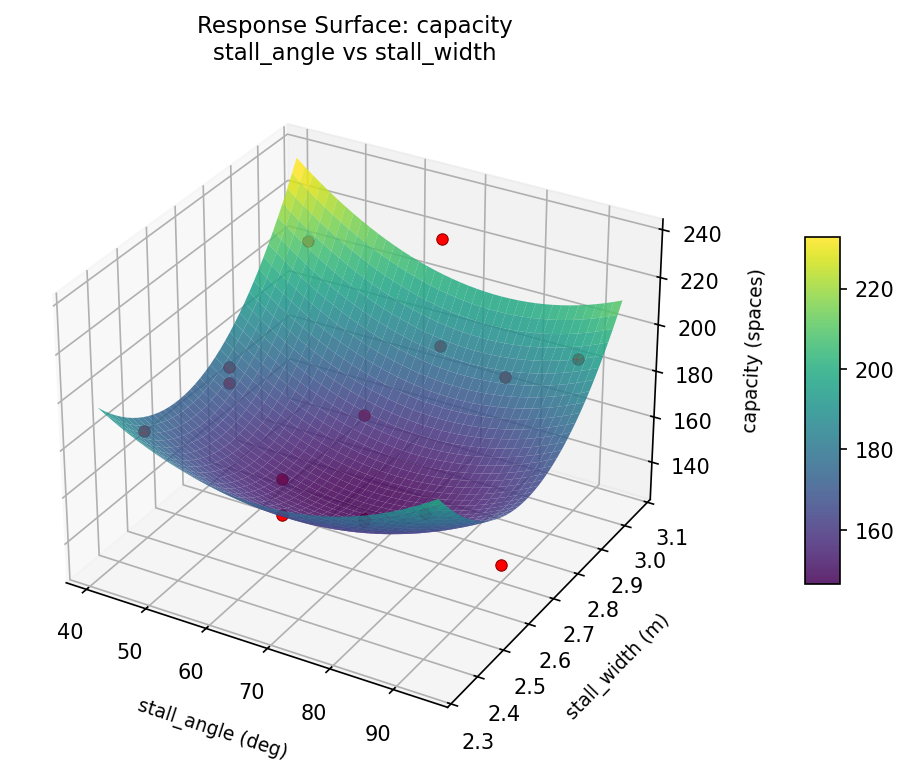

Summary
This experiment investigates parking lot layout design. Box-Behnken design to maximize capacity and minimize average walking distance by tuning stall angle, aisle width, and stall width.
The design varies 3 factors: stall angle (deg), ranging from 45 to 90, aisle width (m), ranging from 4.5 to 7.5, and stall width (m), ranging from 2.4 to 3.0. The goal is to optimize 2 responses: capacity (spaces) (maximize) and avg walk m (m) (minimize). Fixed conditions held constant across all runs include lot area m2 = 5000, handicap pct = 5.
A Box-Behnken design was chosen because it efficiently fits quadratic models with 3 continuous factors while avoiding extreme corner combinations — requiring only 15 runs instead of the 8 needed for a full factorial at two levels.
Quadratic response surface models were fitted to capture potential curvature and factor interactions. The RSM contour plots below visualize how pairs of factors jointly affect each response.
Key Findings
For capacity, the most influential factors were stall width (44.8%), aisle width (35.1%), stall angle (20.1%). The best observed value was 225.0 (at stall angle = 67.5, aisle width = 7.5, stall width = 3).
For avg walk m, the most influential factors were aisle width (47.0%), stall width (34.5%), stall angle (18.6%). The best observed value was 35.0 (at stall angle = 90, aisle width = 6, stall width = 2.4).
Recommended Next Steps
- Run confirmation experiments at the predicted optimal settings to validate the model.
- Consider whether any fixed factors should be varied in a future study.
Experimental Setup
Factors
| Factor | Low | High | Unit |
|---|
stall_angle | 45 | 90 | deg |
aisle_width | 4.5 | 7.5 | m |
stall_width | 2.4 | 3.0 | m |
Fixed: lot_area_m2 = 5000, handicap_pct = 5
Responses
| Response | Direction | Unit |
|---|
capacity | ↑ maximize | spaces |
avg_walk_m | ↓ minimize | m |
Configuration
{
"metadata": {
"name": "Parking Lot Layout Design",
"description": "Box-Behnken design to maximize capacity and minimize average walking distance by tuning stall angle, aisle width, and stall width"
},
"factors": [
{
"name": "stall_angle",
"levels": [
"45",
"90"
],
"type": "continuous",
"unit": "deg"
},
{
"name": "aisle_width",
"levels": [
"4.5",
"7.5"
],
"type": "continuous",
"unit": "m"
},
{
"name": "stall_width",
"levels": [
"2.4",
"3.0"
],
"type": "continuous",
"unit": "m"
}
],
"fixed_factors": {
"lot_area_m2": "5000",
"handicap_pct": "5"
},
"responses": [
{
"name": "capacity",
"optimize": "maximize",
"unit": "spaces"
},
{
"name": "avg_walk_m",
"optimize": "minimize",
"unit": "m"
}
],
"settings": {
"operation": "box_behnken",
"test_script": "use_cases/125_parking_lot_layout/sim.sh"
}
}
Experimental Matrix
The Box-Behnken Design produces 15 runs. Each row is one experiment with specific factor settings.
| Run | stall_angle | aisle_width | stall_width |
|---|
| 1 | 67.5 | 4.5 | 2.4 |
| 2 | 67.5 | 6 | 2.7 |
| 3 | 90 | 6 | 3 |
| 4 | 90 | 6 | 2.4 |
| 5 | 67.5 | 6 | 2.7 |
| 6 | 67.5 | 6 | 2.7 |
| 7 | 45 | 6 | 3 |
| 8 | 90 | 4.5 | 2.7 |
| 9 | 67.5 | 4.5 | 3 |
| 10 | 90 | 7.5 | 2.7 |
| 11 | 45 | 6 | 2.4 |
| 12 | 67.5 | 7.5 | 3 |
| 13 | 45 | 4.5 | 2.7 |
| 14 | 45 | 7.5 | 2.7 |
| 15 | 67.5 | 7.5 | 2.4 |
Step-by-Step Workflow
1
Preview the design
$ python doe.py info --config use_cases/125_parking_lot_layout/config.json
2
Generate the runner script
$ python doe.py generate --config use_cases/125_parking_lot_layout/config.json \
--output use_cases/125_parking_lot_layout/results/run.sh --seed 42
3
Execute the experiments
$ bash use_cases/125_parking_lot_layout/results/run.sh
4
Analyze results
$ python doe.py analyze --config use_cases/125_parking_lot_layout/config.json
5
Get optimization recommendations
$ python doe.py optimize --config use_cases/125_parking_lot_layout/config.json
6
Generate the HTML report
$ python doe.py report --config use_cases/125_parking_lot_layout/config.json \
--output use_cases/125_parking_lot_layout/results/report.html
Real-World Experiment Workflow
ℹ
Physical Vehicle Test? Use the Manual Workflow
Automotive experiments require real driving conditions, fuel consumption measurement, and physical equipment adjustments. The simulation script above is for demonstration. For your real experiments, use record, status, and export-worksheet.
$ python doe.py export-worksheet --config use_cases/125_parking_lot_layout/config.json \
--format csv --output worksheet.csv
$ python doe.py status --config use_cases/125_parking_lot_layout/config.json
$ python doe.py record --config use_cases/125_parking_lot_layout/config.json --run 1
$ python doe.py analyze --config use_cases/125_parking_lot_layout/config.json --partial
$ python doe.py analyze --config use_cases/125_parking_lot_layout/config.json
$ python doe.py optimize --config use_cases/125_parking_lot_layout/config.json
$ python doe.py report --config use_cases/125_parking_lot_layout/config.json \
--output report.html
✔
Works Without a Test Script
The analysis pipeline doesn't care how results were produced. Record your measurements with record, and the full analysis, optimization, and reporting pipeline works identically. Use --partial to get early insights before all runs are complete.
Features Exercised
| Feature | Value |
|---|
| Design type | box_behnken |
| Factor types | continuous (all 3) |
| Arg style | double-dash |
| Responses | 2 (capacity ↑, avg_walk_m ↓) |
| Total runs | 15 |
Analysis Results
Generated from actual experiment runs using the DOE Helper Tool.
Response: capacity
Top factors: stall_width (44.8%), aisle_width (35.1%), stall_angle (20.1%).
Pareto Chart

Main Effects Plot

Response: avg_walk_m
Top factors: aisle_width (47.0%), stall_width (34.5%), stall_angle (18.6%).
Pareto Chart

Main Effects Plot

Response Surface Plots
3D surfaces fitted with quadratic RSM. Red dots are observed data points.
avg walk m aisle width vs stall width

avg walk m stall angle vs aisle width

avg walk m stall angle vs stall width

capacity aisle width vs stall width

capacity stall angle vs aisle width

capacity stall angle vs stall width

Full Analysis Output
RSM surface: rsm_capacity_stall_angle_vs_aisle_width.png
RSM surface: rsm_capacity_stall_angle_vs_stall_width.png
RSM surface: rsm_capacity_aisle_width_vs_stall_width.png
RSM surface: rsm_avg_walk_m_stall_angle_vs_aisle_width.png
RSM surface: rsm_avg_walk_m_stall_angle_vs_stall_width.png
RSM surface: rsm_avg_walk_m_aisle_width_vs_stall_width.png
=== Main Effects: capacity ===
Factor Effect Std Error % Contribution
--------------------------------------------------------------
stall_width 37.6071 7.2413 44.8%
aisle_width 29.5000 7.2413 35.1%
stall_angle 16.9286 7.2413 20.1%
=== Summary Statistics: capacity ===
stall_angle:
Level N Mean Std Min Max
------------------------------------------------------------
45 4 187.5000 14.8436 175.0000 209.0000
67.5 7 170.5714 31.9315 132.0000 225.0000
90 4 179.2500 34.0820 131.0000 211.0000
aisle_width:
Level N Mean Std Min Max
------------------------------------------------------------
4.5 4 196.0000 26.8452 166.0000 225.0000
6 7 173.0000 29.3144 132.0000 209.0000
7.5 4 166.5000 23.7978 131.0000 181.0000
stall_width:
Level N Mean Std Min Max
------------------------------------------------------------
2.4 4 179.0000 8.8318 166.0000 185.0000
2.7 7 163.1429 31.4082 131.0000 211.0000
3 4 200.7500 20.3695 179.0000 225.0000
=== Main Effects: avg_walk_m ===
Factor Effect Std Error % Contribution
--------------------------------------------------------------
aisle_width 4.4286 1.3281 47.0%
stall_width 3.2500 1.3281 34.5%
stall_angle 1.7500 1.3281 18.6%
=== Summary Statistics: avg_walk_m ===
stall_angle:
Level N Mean Std Min Max
------------------------------------------------------------
45 4 45.0000 6.1644 37.0000 52.0000
67.5 7 43.4286 4.1173 40.0000 50.0000
90 4 43.2500 6.9940 35.0000 52.0000
aisle_width:
Level N Mean Std Min Max
------------------------------------------------------------
4.5 4 42.7500 5.6199 37.0000 50.0000
6 7 42.5714 4.3150 35.0000 48.0000
7.5 4 47.0000 6.0000 40.0000 52.0000
stall_width:
Level N Mean Std Min Max
------------------------------------------------------------
2.4 4 43.7500 6.3443 35.0000 50.0000
2.7 7 45.0000 5.8595 37.0000 52.0000
3 4 41.7500 2.3629 40.0000 45.0000
Pareto chart (capacity): use_cases/125_parking_lot_layout/results/analysis/pareto_capacity.png
Pareto chart (avg_walk_m): use_cases/125_parking_lot_layout/results/analysis/pareto_avg_walk_m.png
Main effects (capacity): use_cases/125_parking_lot_layout/results/analysis/main_effects_capacity.png
Main effects (avg_walk_m): use_cases/125_parking_lot_layout/results/analysis/main_effects_avg_walk_m.png
Optimization Recommendations
=== Optimization: capacity ===
Direction: maximize
Best observed run: #1
stall_angle = 67.5
aisle_width = 7.5
stall_width = 3
Value: 225.0
RSM Model (linear, R² = 0.3646, Adj R² = 0.1913):
Coefficients:
intercept +177.4000
stall_angle +10.2500
aisle_width +4.6250
stall_width +19.3750
RSM Model (quadratic, R² = 0.8467, Adj R² = 0.5708):
Coefficients:
intercept +184.0000
stall_angle +10.2500
aisle_width +4.6250
stall_width +19.3750
stall_angle*aisle_width -11.0000
stall_angle*stall_width -20.5000
aisle_width*stall_width +25.7500
stall_angle^2 -10.1250
aisle_width^2 -4.8750
stall_width^2 +2.6250
Curvature analysis:
stall_angle coef=-10.1250 concave (has a maximum)
aisle_width coef=-4.8750 concave (has a maximum)
stall_width coef=+2.6250 convex (has a minimum)
Notable interactions:
aisle_width*stall_width coef=+25.7500 (synergistic)
stall_angle*stall_width coef=-20.5000 (antagonistic)
stall_angle*aisle_width coef=-11.0000 (antagonistic)
Predicted optimum (from quadratic model):
stall_angle = 67.5
aisle_width = 7.5
stall_width = 3
Predicted value: 231.5000
Model quality: Good fit — general trends are captured, some noise remains.
Factor importance:
1. stall_width (effect: 38.8, contribution: 56.6%)
2. stall_angle (effect: 20.5, contribution: 29.9%)
3. aisle_width (effect: 9.2, contribution: 13.5%)
=== Optimization: avg_walk_m ===
Direction: minimize
Best observed run: #13
stall_angle = 90
aisle_width = 6
stall_width = 2.4
Value: 35.0
RSM Model (linear, R² = 0.2774, Adj R² = 0.0803):
Coefficients:
intercept +43.8000
stall_angle -2.8750
aisle_width +2.1250
stall_width -0.2500
RSM Model (quadratic, R² = 0.7397, Adj R² = 0.2711):
Coefficients:
intercept +48.6667
stall_angle -2.8750
aisle_width +2.1250
stall_width -0.2500
stall_angle*aisle_width +0.2500
stall_angle*stall_width +4.0000
aisle_width*stall_width +0.0000
stall_angle^2 -1.4583
aisle_width^2 -4.4583
stall_width^2 -3.2083
Curvature analysis:
aisle_width coef=-4.4583 concave (has a maximum)
stall_width coef=-3.2083 concave (has a maximum)
stall_angle coef=-1.4583 concave (has a maximum)
Notable interactions:
stall_angle*stall_width coef=+4.0000 (synergistic)
Predicted optimum (from quadratic model):
stall_angle = 45
aisle_width = 6
stall_width = 2.4
Predicted value: 51.1250
Model quality: Good fit — general trends are captured, some noise remains.
Factor importance:
1. aisle_width (effect: 6.2, contribution: 41.6%)
2. stall_angle (effect: 5.8, contribution: 38.2%)
3. stall_width (effect: 3.0, contribution: 20.2%)